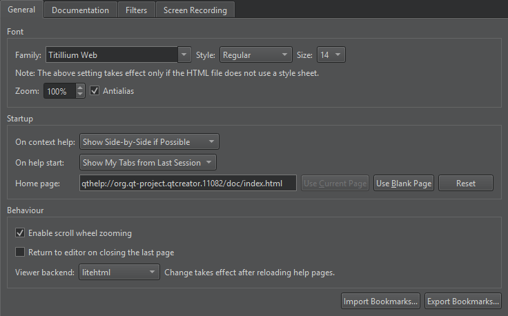

Select the help start page
You can select the page to display when you open the Help mode in the Preferences > Help > General > On help start field.

- To display the page and help views that were open when you exited the mode, select the Show My Tabs from Last Session option. However, Web pages are not opened because loading them would slow down opening the Help mode.
- To display a particular page, select Show My Home Page, and specify the page in the Home Page field.
- To display a blank page, select the Show a Blank Page option. You can also select the Use Blank Page button to set a blank page as your home page.
See also Get help.